Explore & Community
The whole discovery and community-consumption surface: the Home feed and its three rails, the two “See all” explore pages, the MV player at /watch, the community song player at /song/play, and the creator profile at /creator. Every route is public; the sign-in gate sits on the ACTION, never on the route.
| Platform | YouCam Muse Web — captured at 1403×697 (desktop only, D8) |
| Audience | QA |
| Scope | The Home feed (hero, tool selector, three rails), /explore/mvs, /explore/songs, /watch (including the YCM watermark and the vertical swipe feed), /song/play, and /creator (both modes, plus the demo-flag empty state). The sign-in gate is walked on this surface because it fires at the action, not at the route. |
| Out of scope | The create flows the CTAs lead into (areas 02/03 — S1, S2); the shell and the sign-in modal itself (areas 01/09 — S6); the share dialog’s own rules (area 10 — S9); the ranking, eligibility, moderation and refresh layer, which is unbuilt (see Prototype vs production). |
| Source | specs/areas/04-explore-community.md (§§1-9, AC-EXP-01..12), the Explore Curation PRD, and the running app |
↓ Flow Diagram — full user journey (click to expand)
Mermaid source
flowchart TD
Home["/ - Home feed: hero + 2 create cards + 3 seed rails"] --> Rails{Which control?}
Rails -->|album art| Preview["SongPlayBar previews in place - no navigation"]
Rails -->|See all: MVs| ExpMv["/explore/mvs - 2 sections, every item"]
Rails -->|See all: songs| ExpSong["/explore/songs - Top Picks rail + 10 genre tabs"]
Rails -->|MV card| Watch
ExpMv -->|a card| Watch["/watch?id - stage + floating meta + transport"]
ExpSong -->|row title| Result["/song/result (S1)"]
ExpSong -->|a song| Play["/song/play?id - same screen, bar opens on play"]
Watch -->|drag past threshold| Watch
Watch -.->|official MV| Mark["YCM watermark over the video"]
Watch -->|Create MV| Room["/mv/room pre-filled (S2)"]
Play -->|Create AI Song| Song["/song/create pre-filled (S1)"]
Play -.->|a creator song| List["The playlist follows the song; no tab active"]
Watch -->|creator| Creator["/creator"]
Play -->|creator| Creator
Creator --> Whose{Whose page?}
Whose -->|someone else| Other["Like + Share inline, no menu"]
Whose -->|your own| Own["Six-slot overflow menu per row"]
Gate["Sign-in modal - at the action (S6)"]
Home -.->|Create or Like, signed out| Gate
Watch -.->|Like, signed out| Gate
Bad["Unresolvable id: not-found + an Explore action"]
Watch -.-> Bad
Play -.-> Bad
Demo["?demo=1 empty-profile switch"] -.-> Empty["No works released yet"]
Creator -.-> Empty
| ID | Path | Entry point | Steps | Outcome |
|---|---|---|---|---|
| P1 | The Home feed | Open / (public — no sign-in required) | 8 steps | The visitor either browses on, previews a song in place, or is asked to sign in at a create action |
| P2 | Explore MVs | “See all” on Trending Music Videos, or /explore/mvs directly | 3 steps | The visitor picks an MV and lands on the player |
| P3 | Explore songs | “See all” on either songs rail, or /explore/songs directly | 5 steps | The visitor previews a song, opens it, or starts creating one from it |
| P4 | Watch an MV | An MV card anywhere, or /watch?id= directly | 11 steps | The visitor watches, swipes on through the feed, or leaves to create their own MV |
| P5 | Play a community song | A song card on the Home feed, a creator profile row, or /song/play?id= directly | 4 steps | The song plays, from whichever playlist its id belongs to |
| P6 | The creator profile | A creator link on either player, or the profile screen’s own MV / Song tiles | 7 steps | The visitor opens one of that creator’s works, or acts on one of their own |
What a visitor lands on: the hero, the two create cards, the three rails, and the two things a song row can do.
- P1-S1 Opens the home page.
- P1-S2 Scrolls down.
- P1-S3 Looks at the Trending Music Videos rail before touching it.
- P1-S4 Presses Next.
- P1-S5 Presses the play control on a Newly Released Songs row.
- P1-S6 Presses Share on a song row.
- P1-S7 Opens the same page with nobody signed in.
- P1-S8 While signed out, presses a create card.
- 1Two gated create cards
- 2Hero filmstrip — only the centred card plays
- Heading: “What would you like to create today?”
- Card 1: “AI Music Video” / “Upload a selfie and let AI create your music video.”
- Card 2: “AI Song” / “Write your lyrics or idea and let AI create the song.”
- Hero card CTA: “Create MV”
- At 768px and above the create cards sit ABOVE the hero; below 768px that order reverses.AC-EXP-01. Each side of the branch is a different component, chosen in JavaScript from a media query rather than by CSS, so one width shows only half of what this screen can be.
- Only the centred hero card plays its video; the rest show their poster image.The filmstrip scroll-snaps, and playback follows whichever card is centred.
- This route is public — arriving here signed out renders exactly the same screen (P1-S7).
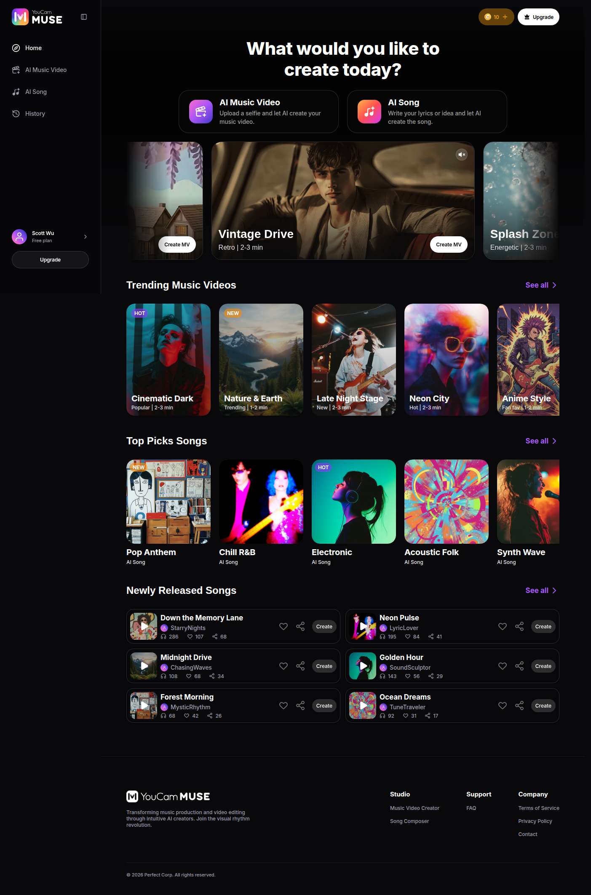
- 1Trending Music Videos — fed by NEW_MVS
- 2Top Picks Songs
- 3Newly Released Songs — 6 rows, 2 columns
- Rail 1: “Trending Music Videos”
- Rail 2: “Top Picks Songs”
- Rail 3: “Newly Released Songs”
- Section link: “See all”
- Song card subtitle: “AI Song”
- THREE rails, in this order, always.AC-EXP-01. The order is the order the components are mounted in; it is not ranked and it does not vary by visitor.
- Every rail is a fixed list in array order — nothing here is ranked, refreshed or personalised.The scoring, eligibility and refresh rules the Curation PRD specifies are unbuilt; see Prototype vs production.
- “Trending Music Videos” and “See all” do NOT show the same catalog.The rail shows the newly-released MVs; the Top Picks catalog behind them is reachable only from /explore/mvs. Raised as Q-03.
- Newly Released Songs shows six rows in two columns; the rest of that catalog is behind its "See all".
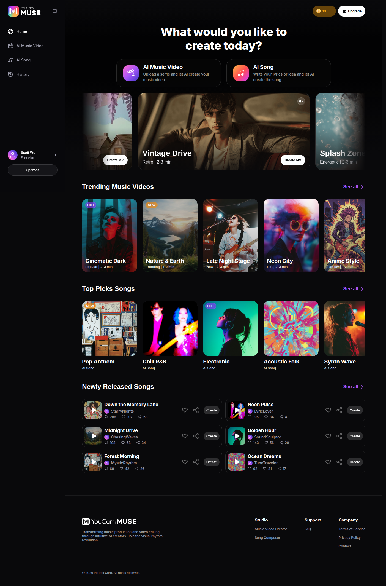
- 1Next — rendered only while the row can scroll forward
- Arrow labels: “Previous”, “Next”
- An arrow renders only while the row can actually scroll that way.At rest the row is at its start, so only Next exists. Verified during capture.
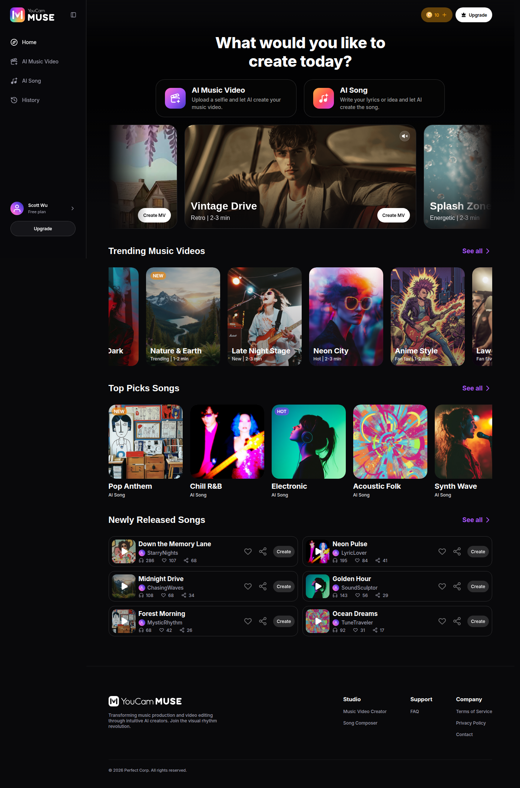
- 1Previous appears once the row has scrolled
- One press advances by one card width plus the gap, not by a page.Measured live during capture.
- The same two-arrow rule applies to the Top Picks Songs rail.
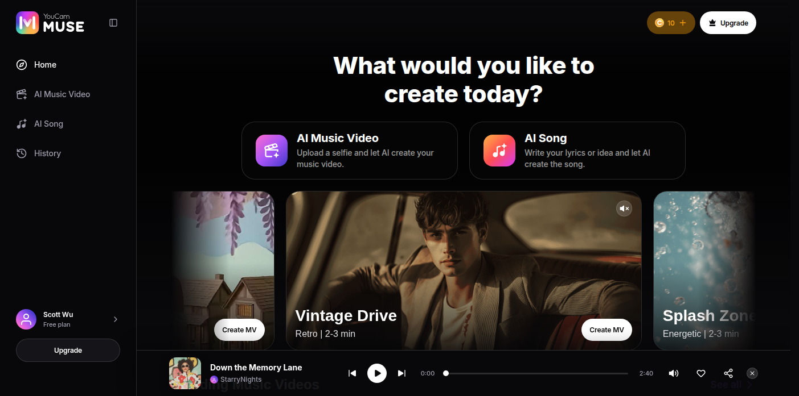
- 1Album art previews in the fixed bar — no navigation
- A song row carries TWO different affordances: the album art previews in place, the title navigates.AC-EXP-03. The split is deliberate, so browsing can continue while a preview plays.
- Only one preview bar can be open on this page at a time.Top Picks and Newly Released each own a preview; starting one closes the other.
- The bar is desktop-only; below 768px the same press navigates instead.The bar is hidden at that width, so previewing would start audio with no visible transport.
- The URL is unchanged by a preview — verified during capture.
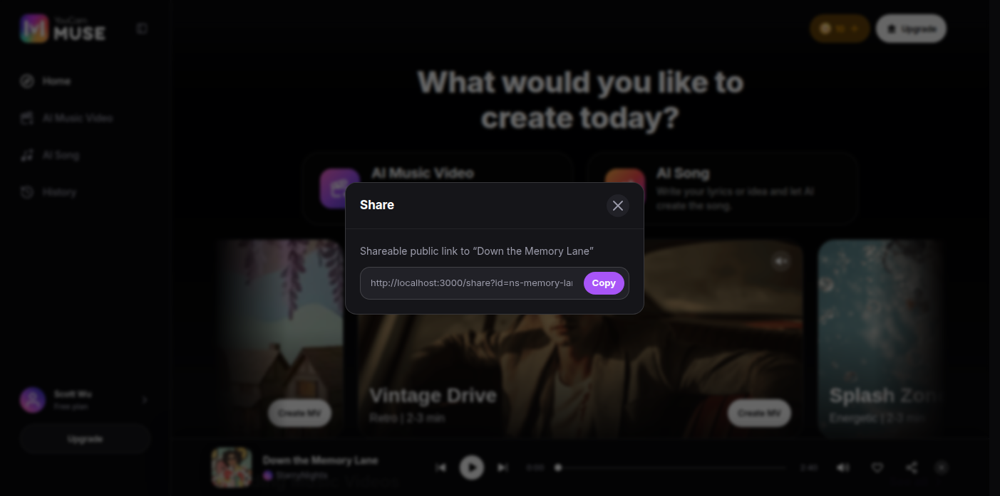
- 1Shared public link — S9 owns this dialog
- Dialog body: “Shareable public link to”
- Action: “Copy”
- This is the same dialog every Share on the surface opens; its own rules are S9’s.The entry point is the boundary: S9 owns what the dialog then does.
- Share is NOT gated: a signed-out visitor gets the dialog, not a sign-in prompt.Shown at P4-S9.
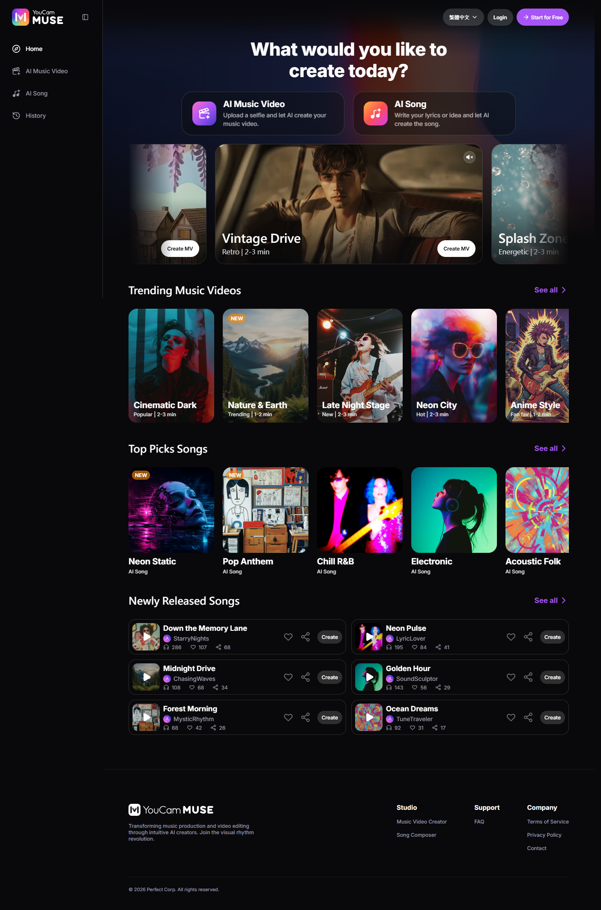
- 1Public — the feed renders in full with nobody signed in
- None of the six Explore routes is behind a route guard.Area 04 §2: every route in the area is public.
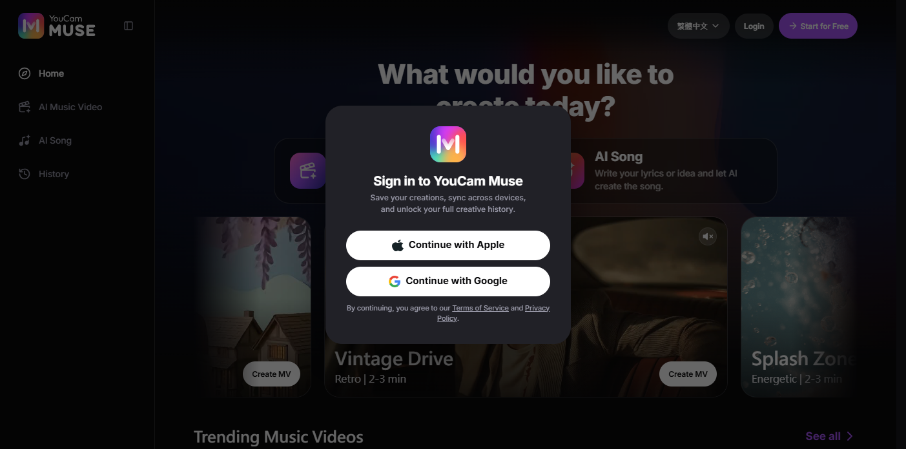
- 1Sign-in opens at the click — S6 owns this modal
- The gate is on the ACTION, not the route: the screen was already fully visible.AC-EXP-02 / AC-EXP-08.
- On success the queued action runs, so the user lands where they were going.The modal’s own behaviour, dismissal and success animation belong to S6.
- Every Create and every Like on this surface goes through the same gate.The hero CTAs, both create cards, each song row’s Create, and both players.
The MV catalog behind “See all” — two sections, every item, and a card that is a real link.
- P2-S1 Opens /explore/mvs.
- P2-S2 Presses a card.
- P2-S3 Middle-clicks a card, or copies its link and opens it in a new tab.
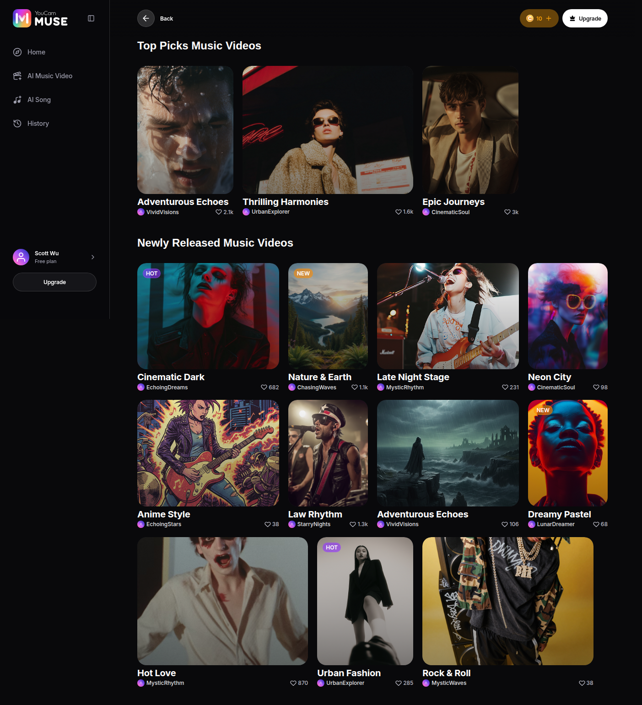
- 1Top Picks — TRENDING_MVS
- 2Newly Released — NEW_MVS
- There is no item cap: every seed item renders, in both sections.Counted live during capture — 3 in the first section, 11 in the second. A different catalog size renders in full.
- The two sections are two different catalogs, not one list shown twice.The first is the Top Picks catalog, which has no entry point on the Home feed at all.
- Back returns to wherever the visitor came from, falling back to the Home feed.The screen is its own section’s entry point, so it needs a destination when there is no history.
- Below 768px only the FIRST section renders.A phone therefore reaches 3 of the 14 seed items; recorded as a delta, not captured here (D8).
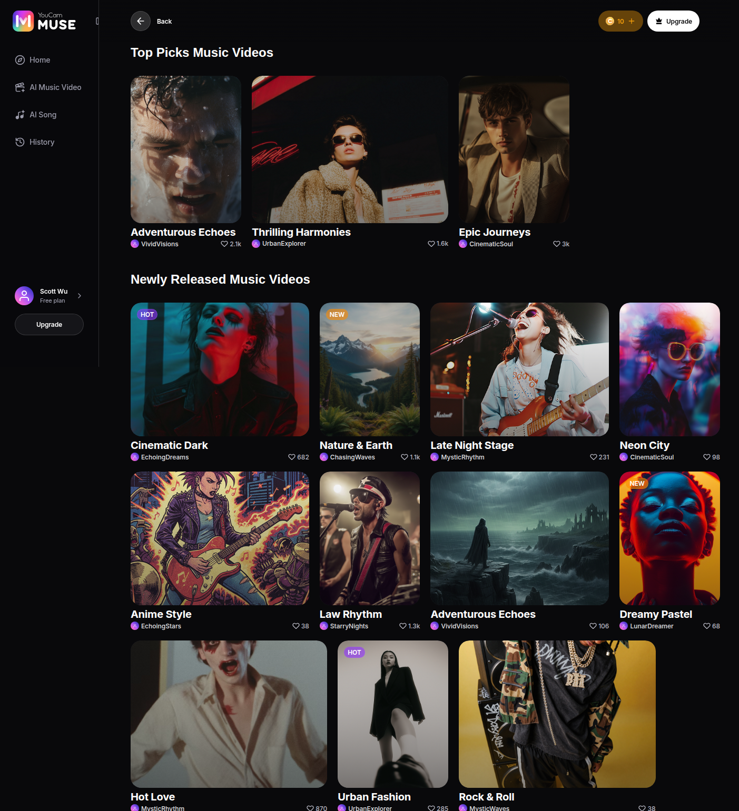
- 1Every card is a real link to /watch?id=
- Every card is a real link carrying the item id, not a click handler.AC-EXP-03. So plain click, middle-click and copy-link all reach the same screen.
- The link keeps the active language prefix.Verified in the markup during capture.
The song catalog: a Top Picks rail, ten genre tabs, and the two things a row does.
- P3-S1 Opens /explore/songs.
- P3-S2 Starts a song playing, then presses the Hip-Hop tab.
- P3-S3 Presses the play control on a row.
- P3-S4 Presses a row’s title.
- P3-S5 Presses Create on a row.

- 1All + the nine creation genres
- 2Top Picks Songs rail
- Rail heading: “Top Picks Songs”
- List heading: “Newly Released Songs”
- Tabs, in this order: “All”, “Pop”, “Hip-Hop”, “R&B”, “Rock”, “Jazz”, “Electronic”, “Rap”, “Classical”, “Country”
- Row action: “Create”
- TEN tabs: All, then the nine genres the song create screen offers, in that order.They are the create screen’s own list, not a list derived from the catalog — the product owner reversed the earlier derivation on 2026-09-01 so the two vocabularies match.
- The All tab lists the whole community catalog — 24 rows in the seed data.Counted live during capture.
- A genre with no songs would render an empty list with no empty state.The seed catalog was re-tagged so every tab has at least two songs; keeping it that way is a constraint on future catalog edits.
- Below 768px the tab bar is hidden, so a phone sees the All catalog only.Recorded as a delta, not captured here (D8).
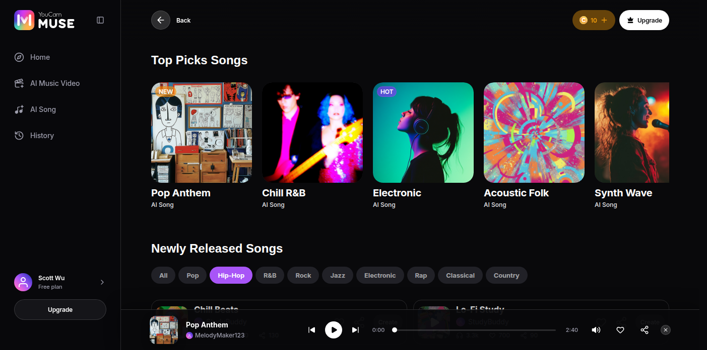
- 1Hip-Hop is the active tab
- 2…and what is playing is untouched
- Switching a tab changes the LIST only; it never changes or restarts what is playing.A browse filter is not a playback control. Verified live during capture and guarded by an e2e test.
- Hip-Hop shows 4 of the 24 rows in the seed catalog.Counted live during capture; the number is a property of the seed data, not a rule.
- 1Preview transport — browsing continues underneath
- Transport labels: “Previous”, “Next”
- Playback is a real audio element — duration, position, seeking and advance-on-end all come from it.AC-EXP-05.
- There is no playback cap for free accounts.AC-EXP-05. The 30-second preview gate was cancelled and is asserted against in the e2e suite.
- Previous / Next step through whichever list is currently displayed.Which list that is can change — see P5-S3.
- There is no shuffle and no repeat: the transport is Previous, Play/Pause, Next.
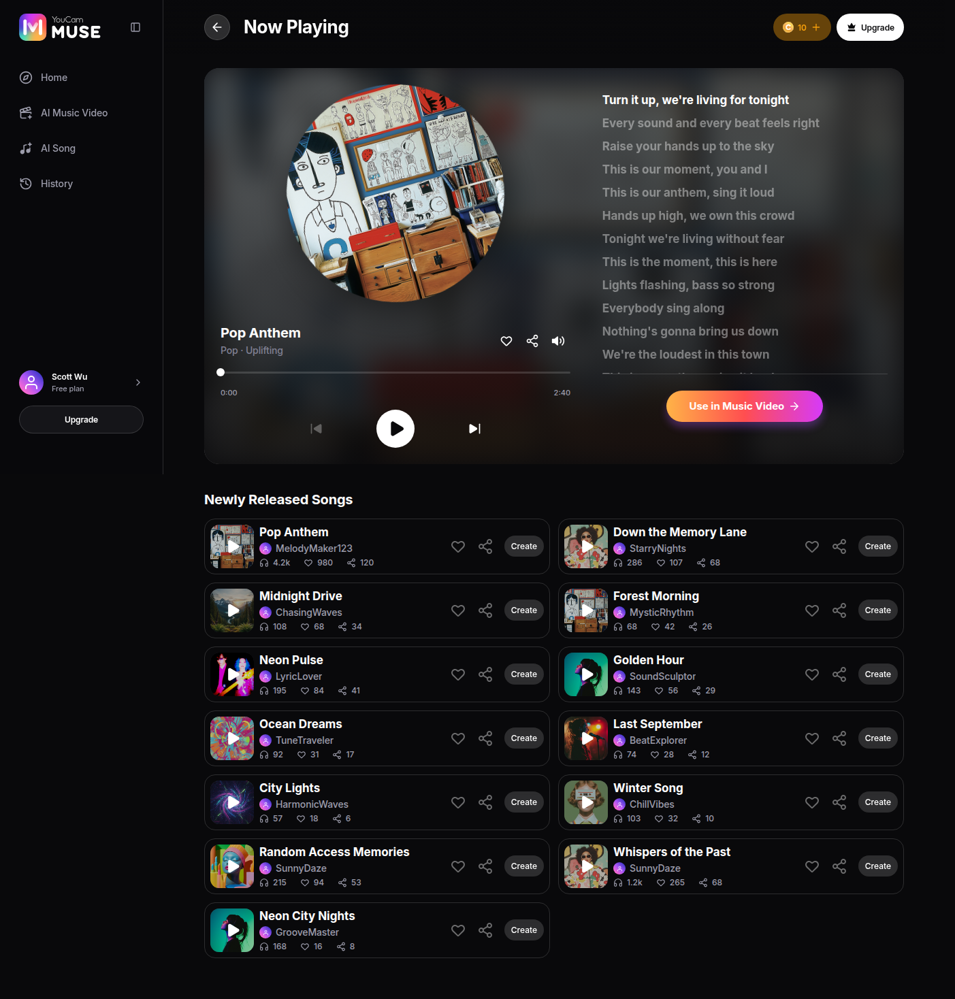
- 1Arrives on the result-stage player — S1 owns this screen
- The row’s title navigates and the row’s album art does not.AC-EXP-03. Both halves are live on the same row; this is the half P3-S3 does not show.
- This applies at 768px and above; below that the same press opens the full-screen player.AC-EXP-03. The narrow layout is out of scope under D8.
- The destination screen belongs to S1.This step stops at its first frame.
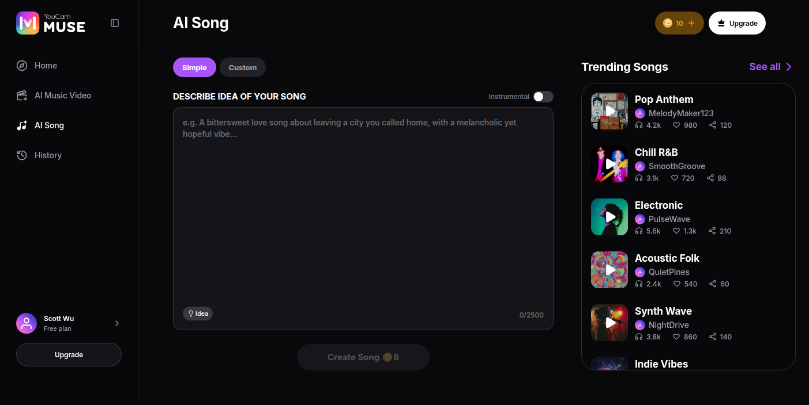
- 1Arrives on /song/create pre-filled — S1 owns this screen
- Create seeds the compose form with the song’s genre, mood, title and lyrics before navigating.AC-EXP-02.
- It is gated: signed out, this opens the sign-in modal instead and runs afterwards.AC-EXP-08; the gate itself is shown at P1-S8.
- The destination screen belongs to S1.This step stops at its first frame.
The MV player: the stage and its controls, the official-video watermark, the vertical swipe feed, the two gated actions, and the create hand-off.
- P4-S1 Opens an MV.
- P4-S2 Scrolls below the player.
- P4-S3 Opens an OFFICIAL music video — one published under the YouCam Muse name.
- P4-S4 Drags vertically on the video stage and holds past the threshold.
- P4-S5 Releases past the threshold.
- P4-S6 Drags a short distance and releases before the threshold.
- P4-S7 Opens an MV reached from a creator profile, then drags on the stage.
- P4-S8 While signed out, presses Like.
- P4-S9 While still signed out, presses Share.
- P4-S10 Presses Create MV.
- P4-S11 Opens /watch with an id that resolves to nothing.
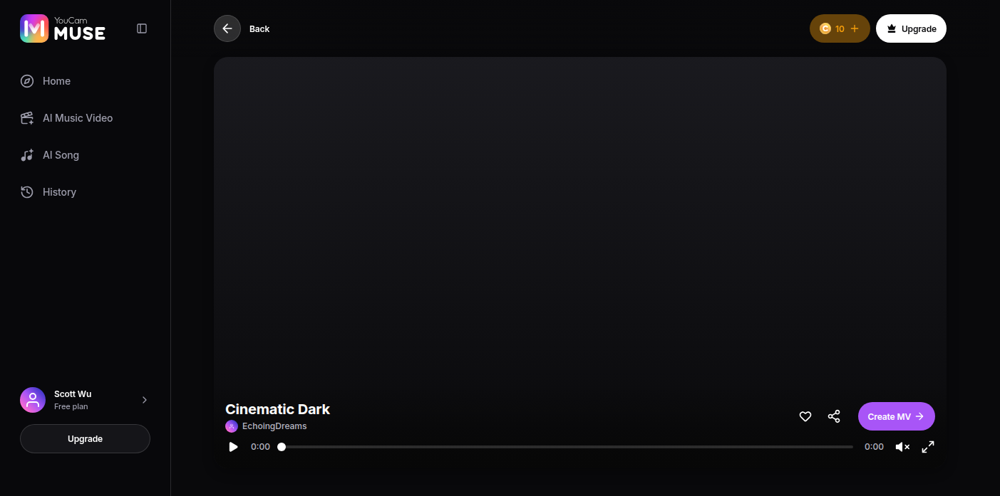
- 1Title, creator, Like / Share, Create MV
- 2Transport — play/pause, seek, mute, fullscreen
- Primary action: “Create MV”
- Control labels: “Like”, “Share”, “Mute”, “Fullscreen”
- The stage takes the item’s OWN aspect ratio — 3:4 or 4:3 — not a fixed one.AC-EXP-04. The catalog deliberately mixes the two; there is no viewer control to switch them.
- Playback starts muted, and the transport offers play/pause, seek, mute and fullscreen.AC-EXP-04. The seek control is keyboard-operable.
- The primary action reads “Create MV” here and “Create Music Video” on a narrow layout.Two labels shown one at a time, not a rename.
- Like is stored for this browsing session only — it is not counted, not persisted, and gone on reload.
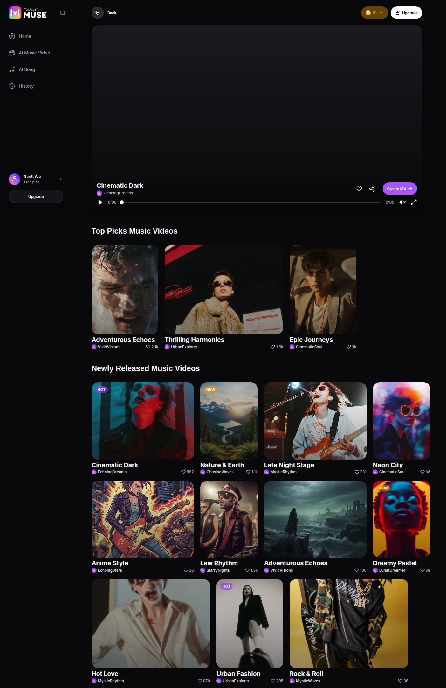
- 1The same two sections /explore/mvs shows
- Identical sections, identical order, same behaviour as P2-S1.One shared component draws both screens’ grids.
- Below 768px both sections are hidden on this screen.Recorded as a delta, not captured here (D8).
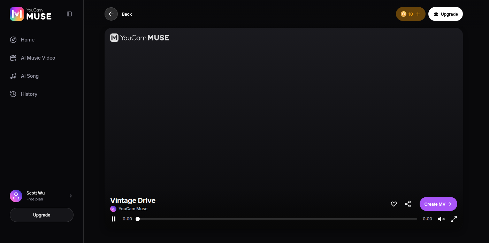
- 1YCM watermark — official videos only
- Creator name on an official video: “YouCam Muse”
- The watermark is on officialness alone, never on whether the video is currently playing.AC-EXP-10. It identifies the video, the way a broadcast mark does.
- It is positioned against the VIDEO’s own rendered rectangle, not the stage’s.AC-EXP-10. The stage centres the video, so a stage-relative offset would land in the blank space beside a shorter video. Verified live during capture.
- A user-submitted MV never shows it — verified on the MV at P4-S1.Only the eight official hero videos carry the official creator name.
- 1Held past the threshold — the next MV peeks in
- The gesture is on the STAGE only — the header, meta row, actions and transport never move.AC-EXP-11. Verified live: their measured positions are unchanged throughout a drag.
- It is a pointer gesture, so a mouse drag works exactly like a touch drag, at every width.AC-EXP-11. It is not inside a phone-only branch.
- The commit threshold is a fraction of the stage height, not a fixed pixel distance.Measured live at this viewport: a 578px stage commits past about 67px.
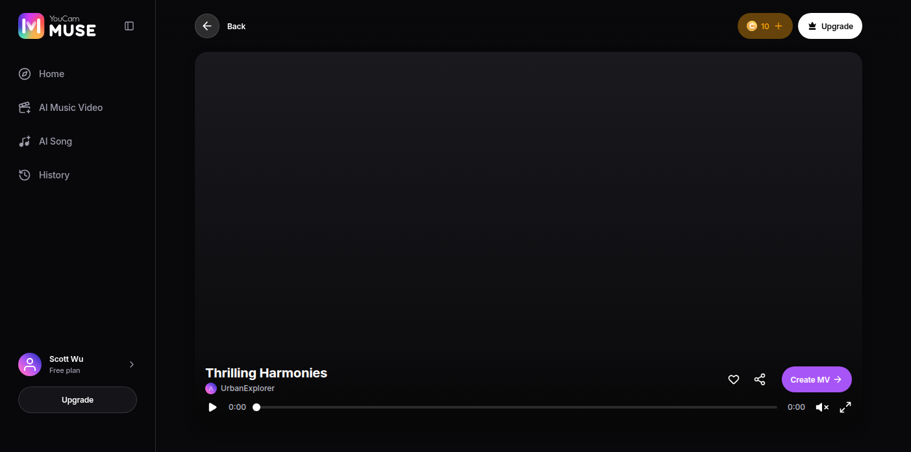
- 1Committed to the next MV; the URL is replaced, not pushed
- The feed is the two catalogs in order, and it wraps — there is no first or last item.AC-EXP-11. Swiping up goes forward, down goes back.
- The URL is REPLACED, not pushed, so Back does not walk back one swipe at a time.AC-EXP-11. A swipe is not a place a user wants to return to individually.
- There is no reload between items: the neighbour was already buffered and simply becomes current.Three video slots rotate roles rather than the elements being replaced.
- Below the threshold nothing commits — not the item, not the URL.AC-EXP-11. Verified live during capture.
- No screenshot: once it has sprung back the screen is identical to P4-S5.
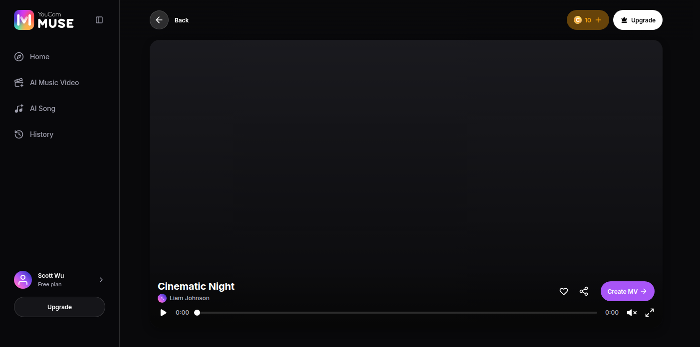
- 1An id outside the feed: one video, and the drag never commits
- An item that is not part of the feed has no next or previous, so the gesture is a no-op.AC-EXP-11. Verified live at half the stage height, which is well past the threshold.
- That item plays through a single video element rather than the three-slot feed.The same fallback carries the official videos at P4-S3.
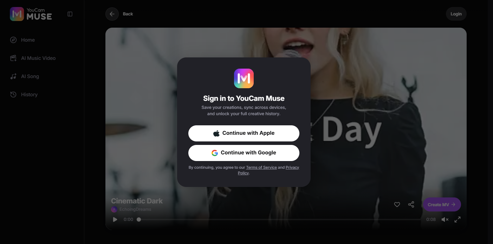
- 1Like gates at the action too (GL-02)
- Like is gated at the press, like every Create on this surface.AC-EXP-08.
- Signed in, it still only changes this session — nothing is counted or stored.Real counters are backend work; see Prototype vs production.
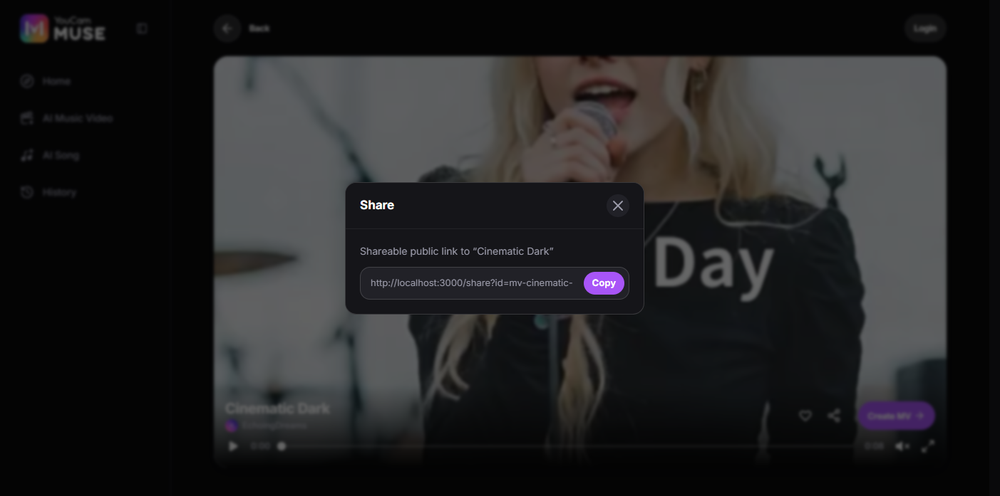
- 1Share stays ungated — no sign-in for a public link
- Share is deliberately NOT gated, on any surface, signed in or out.A public link is public; there is nothing to attribute to an account.
- The dialog’s own rules are S9’s.Named as the boundary; this step shows only that it opens.
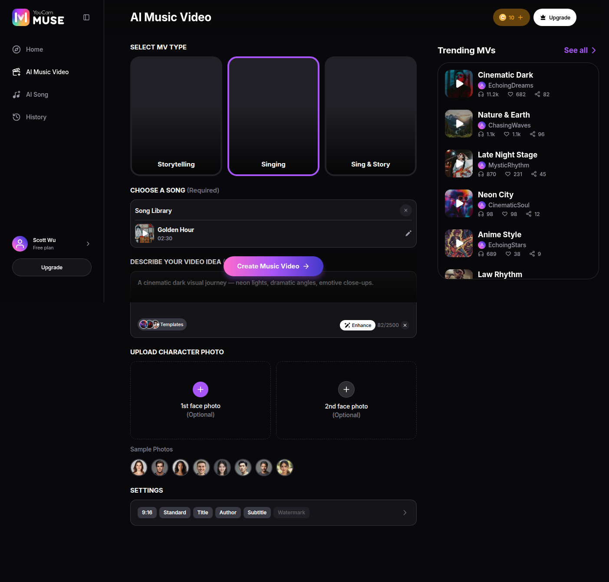
- 1Arrives on /mv/room pre-filled — S2 owns this screen
- It seeds the MV type, the source prompt, the matched song and the title before navigating.AC-EXP-04.
- Gated while signed out, like every other create action here.AC-EXP-08.
- The destination screen belongs to S2.This step stops at its first frame.
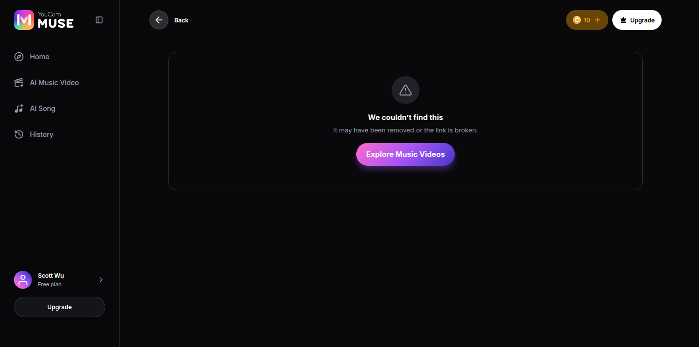
- 1Not found — an Explore CTA, never a silent fallback
- Action: “Explore Music Videos”
- An unresolvable id shows this state; it never silently plays a different MV.AC-EXP-09.
- A MISSING id is different: with no id at all the screen falls back to the first item.AC-EXP-07. Not captured — the result is P4-S1’s screen on a different item.
What a song link opens on a desktop screen, and what a creator’s song does to the list beside it.
- P5-S1 Opens a song link.
- P5-S2 Presses play on the linked song’s row.
- P5-S3 Opens a song belonging to a creator’s own collection.
- P5-S4 Opens /song/play with an id that resolves to nothing.
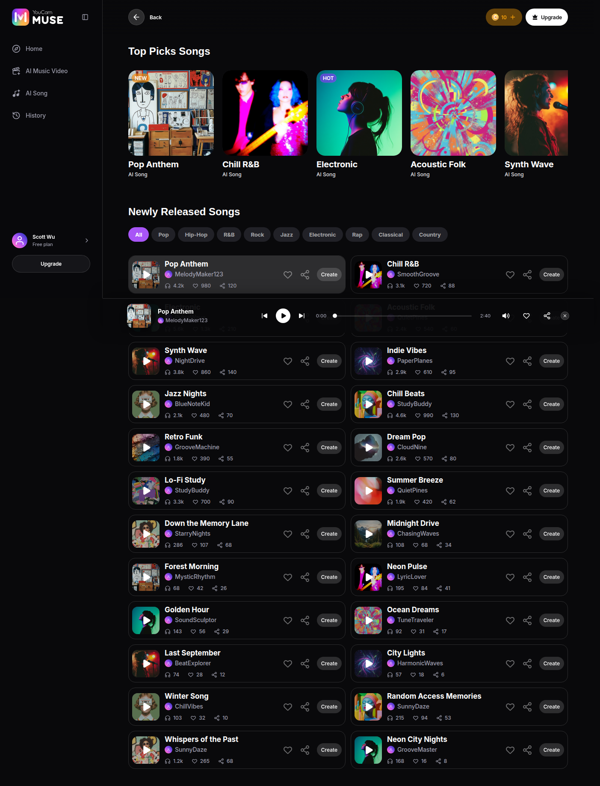
- 1The same browse list — the bar is mounted but closed
- /song/play and /explore/songs are ONE screen behind two addresses.The two were merged; the id only decides which song is queued up.
- The player bar does not open on arrival — only starting playback opens it.Verified live during capture.
- Nothing on screen marks WHICH song the link named until playback starts.Raised as Q-04 — a recipient of a shared song link sees an unmarked catalog.
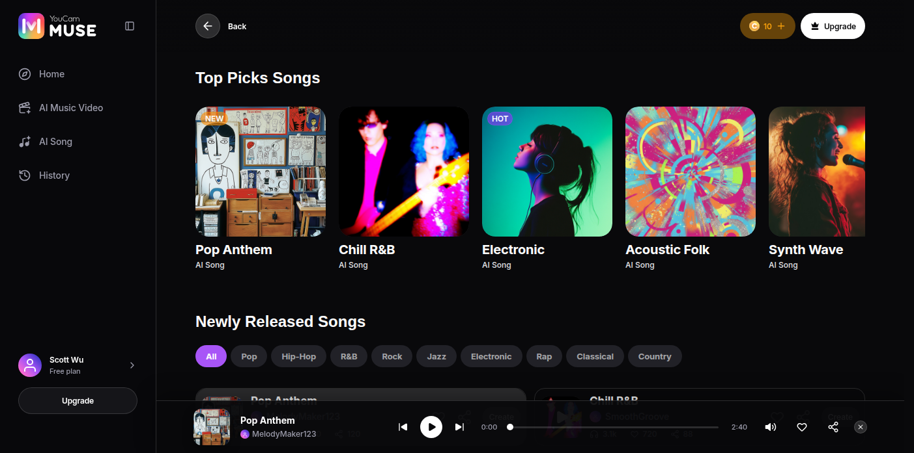
- 1Play opens the bar on the linked track
- The song the bar opens on is the one the id named, not the first row of the list.Verified live during capture.
- The desktop screen has no disc player and no lyrics sheet.AC-EXP-05 puts both on the result-stage player P3-S4 navigates to, and in the narrow layout’s full-screen player.
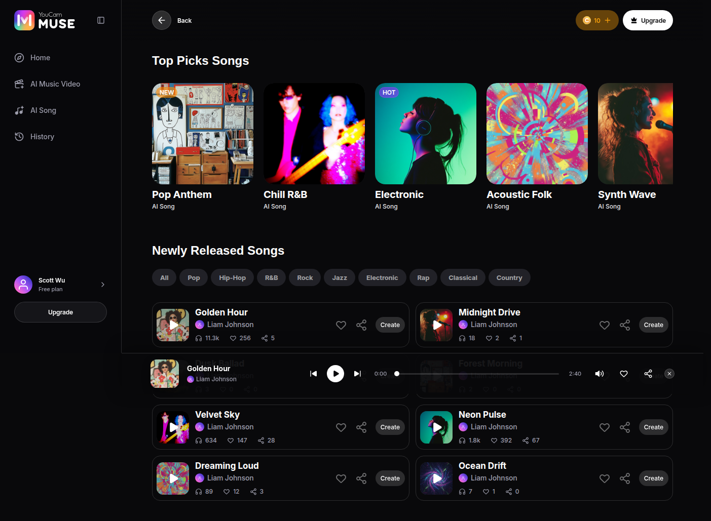
- 1The playlist follows the song — 8 creator tracks
- 2No tab is active
- The playlist follows the song: a creator’s song switches the list to that creator’s catalog.AC-EXP-05. It shows 8 rows in the seed data, counted live.
- No tab is active because no tab is driving the list.Pressing any tab returns to the community catalog.
- Previous / Next then step through the creator’s collection, not the community one.The transport always follows the displayed list.
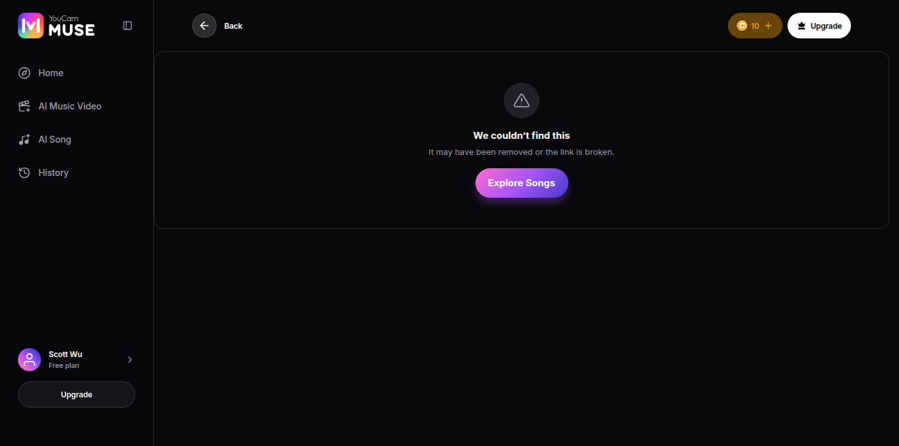
- 1Not found — an Explore CTA, never a silent fallback
- Action: “Explore Songs”
- The same rule as the MV player: an unresolvable id never silently plays something else.AC-EXP-09.
One screen serving two jobs — somebody else’s public page and your own — plus the one state on this surface that only the demo panel can reach.
- P6-S1 Presses a creator name on either player.
- P6-S2 Looks at the row controls on somebody else’s page.
- P6-S3 Arrives on their OWN page — from the profile screen’s MV or Song tile.
- P6-S4 Opens the overflow menu on one of their own music videos.
- P6-S5 Opens the overflow menu on one of their own songs.
- P6-S6 Opens their own page with the demo panel’s empty-profile switch on — /creator?self=1&tab=mv&demo=1.
- P6-S7 Opens somebody else’s empty page — /creator?demo=1.
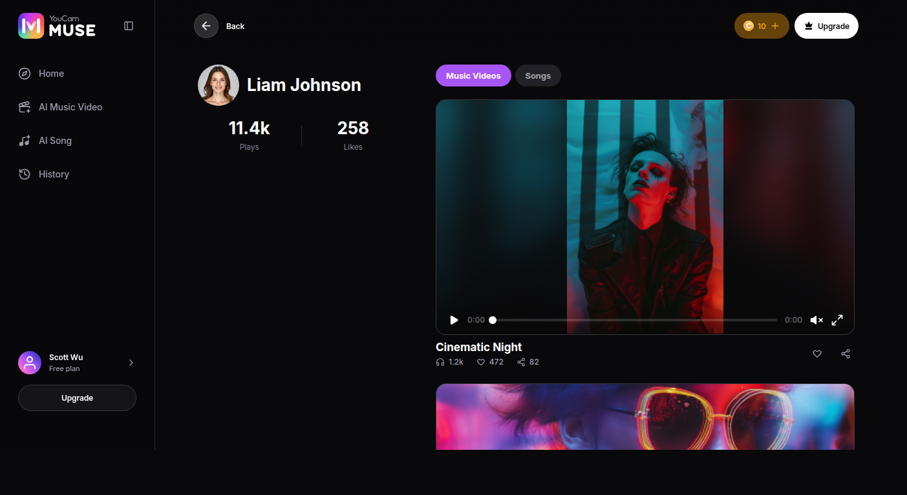
- 1Name + Plays / Likes — no email
- 2Music Videos / Songs
- Stat labels: “Plays”, “Likes”
- Tabs: “Music Videos”, “Songs”
- The header shows a name and two stats — and deliberately NO email address.AC-EXP-06. This page is public, so an email has no business on it. Verified live during capture.
- Rows open the matching player.AC-EXP-06. An MV row opens the MV player, a song row the song player.
- Every creator in the seed data is the same sample creator.One avatar and one set of stats stand behind every name on this surface; see Prototype vs production.
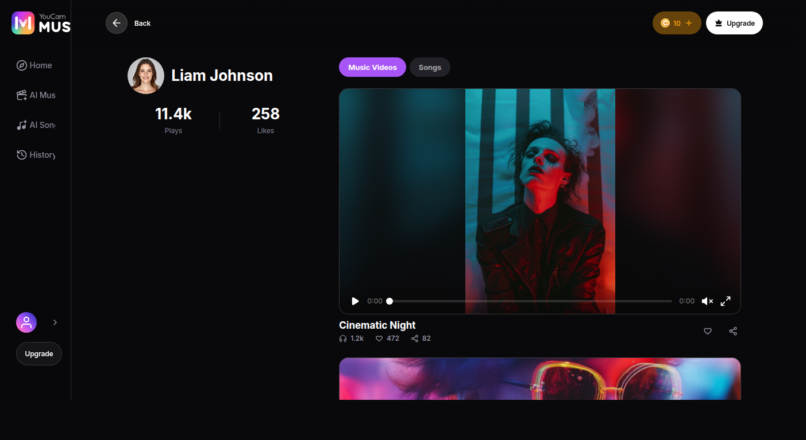
- 1Like and Share only — no owner menu on someone else's page
- A visitor gets exactly two actions, and they are inline — there is no menu to open.The owner menu is conditioned on the page being yours AND you being signed in. Verified live during capture.
- There is no Report and no Block anywhere on this screen.The Curation PRD puts user reporting out of scope for this release; see Prototype vs production.
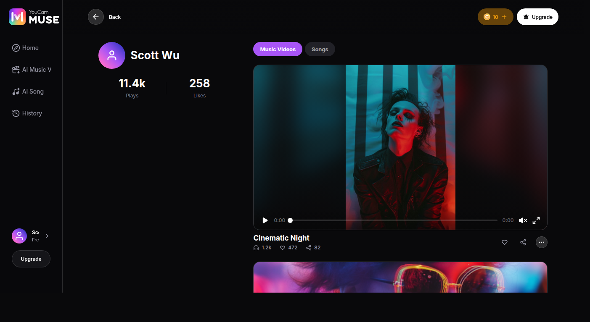
- 1The signed-in user's own identity
- 2The sample creator's stats, even in self mode
- Only the IDENTITY changes in self mode — the stats and works stay the sample creator’s.AC-EXP-06. Verified live during capture; see Prototype vs production.
- One screen serves two jobs: a public creator page, and your own community profile.Only how it was opened tells the two apart.
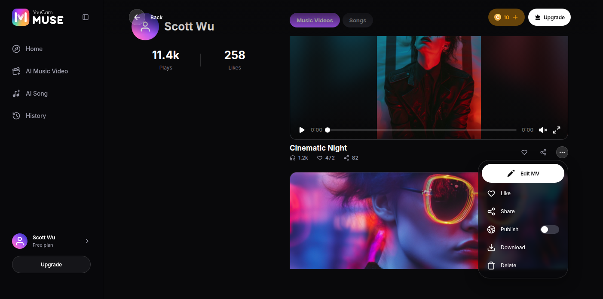
- 1The owner menu on an MV row — wired to History's implementations
- Menu, in order: “Edit MV”, “Like”, “Share”, “Publish”, “Download”, “Delete”
- The menu needs BOTH: the page is yours, and you are signed in.Neither alone is enough — a signed-out visit to your own page shows P6-S2’s inline controls.
- Publish is a switch, not a one-shot action; the other five are actions.Verified live during capture.
- Delete removes the row from the list and nothing else — no server is called.See Prototype vs production.
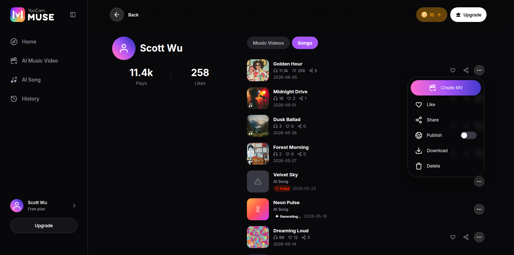
- 1The same six slots on a song row — Edit MV becomes Create MV
- Menu, in order: “Create MV”, “Like”, “Share”, “Publish”, “Download”, “Delete”
- A song has no Edit here; its first slot spins off a music video instead.The same rule the history screen’s own menu follows. Both menus verified live during capture.
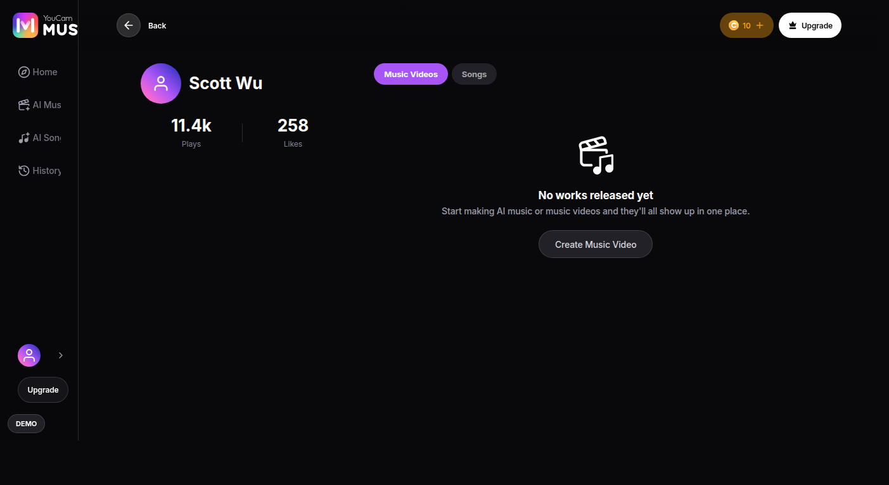
- 1No works released yet
- 2Tab-specific CTA — self only
- Title: “No works released yet”
- Call to action: “Create Music Video”
- The demo switch is the only way to reach this state.AC-EXP-12. The seed collections are fixed constants and can never empty on their own.
- The call to action follows the active tab — the Songs tab offers “Create Song”.AC-EXP-12.
- Only the list is emptied — the header, the stats and the tabs all stay.The switch is applied as the last step before rendering, so nothing underneath is disturbed.
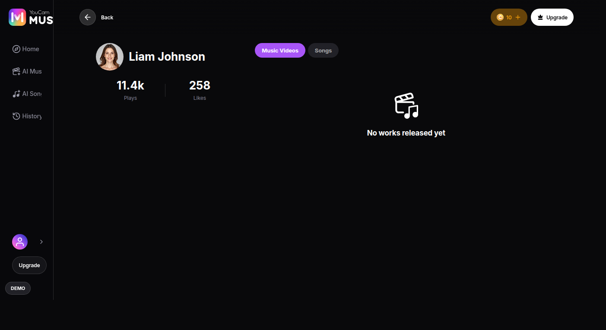
- 1The same block minus the subtitle and CTA
- A visitor gets the title alone: no subtitle, no create button.AC-EXP-12. Prompting a visitor to go and create on a stranger’s page reads as wrong. Verified live during capture.
- Nothing else on the screen changes between the two modes.The header and tabs are identical to P6-S1.
The contract of each screen state. The flow diagram shows the transitions; this shows what each state must render.
| State | Entry condition | Visible / enabled | Transitions | Exit |
|---|---|---|---|---|
| Home rails | Any visitor | Three seed rails in fixed order, each with "See all" | A card opens a player; "See all" opens a catalog | Navigate away |
| Song row | Desktop | Album art, title, Like, Share, Create | Art previews in place; title navigates | N/A |
| Preview bar | Playing on a desktop width | Cover, title, Previous / Play / Next, seek, volume | Steps through the displayed list | Close, or navigate away |
| /explore/mvs | Any visitor | Two sections, every seed item, no cap | A card opens the MV player | Back |
| /explore/songs | Any visitor | Top Picks rail + ten tabs + the filtered list | A tab filters; a row previews or navigates | Back |
| MV stage | An item in the feed | Three rotating video slots | A drag past the threshold commits to a neighbour | Navigate away |
| MV stage | An item outside the feed | One video element | A drag always springs back | Navigate away |
| MV stage | An official video | The YCM watermark over the video rectangle | Unaffected by play, pause or swipe | N/A |
| Either player | An unresolvable id | A not-found block with an Explore action | The action returns to the catalog | N/A |
| Song list | A creator song is playing | That creator's collection, no tab active | Any tab returns to the community catalog | N/A |
| /creator | Somebody else's page | Name + stats + tabs; rows carry Like and Share | A row opens a player | Back |
| /creator | Your own page, signed in | The same, plus a six-slot overflow menu per row | Edit / Create MV, Like, Share, Publish, Download, Delete | Back |
| /creator | Empty (demo switch) | Header and tabs kept; the list replaced | On your own page only, a create CTA | Switch the flag off |
| Any create or Like | Signed out | The sign-in modal, opened at the press | On success the queued action runs | Dismiss and stay put |
Undecided, and blocking something. Everything settled lives beside the rule it governs, not here.
| ID | Question | Blocks | Owner |
|---|---|---|---|
| Q-01 | The Curation PRD contradicts itself twice on its own scoring. Trending MV’s weight table reads 45 / 30 / 15 / 10 while its formula reads 0.35 / 0.25 / 0.15 / 0.10 (summing to 0.85); Top Picks’ table reads 60 / 40 and labels both signals as a 7-day window, while its notes say all-time and its formula reads 0.30 / 0.25 (summing to 0.55). Which half of each pair is authoritative? | Nothing in this spec — no rail is ranked today. It blocks whoever implements ranking. | Product / RD (the PRD is the authority; see References) |
| Q-02 | TBD-EXP-11 — the named handover blocker — is still open after the PRD was read. The PRD defines ranking SEMANTICS (signals, weights, eligibility, refresh cadence) but no endpoint, no field names and no payload shape, so there is still nothing for the frontend to code against. What supplies the community API contract? | The whole area: 17 components across these six routes run on fixed seed arrays with no API behind them. | RD (tracked as TBD-EXP-11) |
| Q-03 | The rail titled “Trending Music Videos” shows the newly-released catalog, and the Top Picks catalog it does NOT show is the one the PRD calls Trending. Is the rail’s title wrong, is its data wrong, or does “Trending” mean something different once ranking exists? | Whether QA should file the mismatch, and what the rail is called after ranking lands | Product owner |
| Q-04 | A shared song link opens the browse list with the linked song queued but nothing marking it, and no player bar until the recipient presses play. Should a deep link start playing, or at least mark the row it named? | What a recipient of a shared song link actually sees (P5-S1) | Product owner |
| Q-05 | The Home rails and both explore grids have no defined behaviour for a catalog that comes back empty. The creator profile now has one, reachable through the demo panel; nothing equivalent exists for the other five surfaces. | Every one of those surfaces on the day a real backend returns zero items | Product owner / designer (tracked as TBD-EXP-06) |
| Q-06 | What does “cost per the Credit Consume MSR” resolve to, generally? (Carried per the programme’s own convention; no step in THIS spec quotes a cost — nothing on this surface spends credits.) | N/A to this spec’s own steps; recorded because every spec in the programme carries this row | Product / RD (the MSR document link is still TBD) |
Every acceptance criterion in plan.md and where this spec defines it — 11 of 13 map to a step. Write the test cases in your test tool; this table is the trace back to the spec.
| Criterion | What it asserts | Specified in |
|---|---|---|
| AC-EXP-01 | WHEN the home page loads, THE SYSTEM SHALL render the hero, the tool selector and the three seed rails in seed order — and SHALL mount the narrow treatment of the hero and tool selector below 768px and the desktop treatment at or above it. | P1-S1 · P1-S2 |
| AC-EXP-02 | WHEN a hero CTA, a tool-selector card, or a row Create is pressed, THE SYSTEM SHALL run the sign-in gate and, on success, navigate to the create flow with the song pre-filled. | P1-S8 · P3-S5 |
| AC-EXP-03 | WHEN an MV card is pressed anywhere, THE SYSTEM SHALL open the MV player for it. WHEN a song row is pressed on /explore/songs at 768px and above, THE SYSTEM SHALL navigate to the result-stage player; WHEN the row’s album art is pressed instead, THE SYSTEM SHALL preview it in the bottom bar WITHOUT navigating. | P1-S5 · P2-S2 · P3-S3 · P3-S4 |
| AC-EXP-04 | WHEN the MV player loads, THE SYSTEM SHALL play the MV muted in the item’s OWN aspect ratio, with play/pause and mute, and expose Like, Share and Create Music Video pre-filling the MV create flow. | P4-S1 · P4-S10 |
| AC-EXP-05 | WHEN the song player loads, THE SYSTEM SHALL resolve the id to the correct playlist, present real audio progress with Previous/Next, Like/Share and a lyrics sheet where one exists, and SHALL NOT cap playback for free accounts. | P3-S3 · P5-S2 · P5-S3 |
| AC-EXP-06 | WHEN the creator profile loads, THE SYSTEM SHALL show the profile header and stats and the Music Videos / Songs tabs, whose rows open the respective players; the self variant SHALL show the signed-in user’s identity. | P6-S1 · P6-S3 |
| AC-EXP-07 | WHEN an id is missing or invalid on either player, THE SYSTEM SHALL fall back to a default item without crashing. | The MISSING-id half produces P4-S1’s screen on a different item, so a screenshot of it would be indistinguishable; it is listed in the error table instead. The INVALID-id half is not a fallback at all — it is the not-found state, specified by AC-EXP-09 at P4-S11 and P5-S4. |
| AC-EXP-08 | WHEN a community Like or Create is invoked while signed out, THE SYSTEM SHALL open the sign-in modal at the action and run it on success. | P1-S8 · P4-S8 |
| AC-EXP-08b | THE SYSTEM SHALL render all six surfaces at 320/375/768/1024/1440/1920px with no overflow. | Visual-only; the six-tier sweep is e2e/visual-baseline.spec.ts’s job. This spec’s D8 scope captures 1403×697 desktop only, and the behavioural differences by width are recorded in Prototype vs production instead. |
| AC-EXP-09 | WHEN a /watch or /song/play id is unresolvable, THE SYSTEM SHALL show a not-found state; WHEN an explore grid is empty or the browser is offline, THE SYSTEM SHALL show the empty / offline state. | P4-S11 · P5-S4 |
| AC-EXP-10 | WHEN the MV player plays an official MV, THE SYSTEM SHALL overlay the YCM watermark positioned against the video’s own rendered rectangle; WHEN the MV is user-submitted, THE SYSTEM SHALL NOT show it. | P4-S1 · P4-S3 |
| AC-EXP-11 | WHEN the viewer drags vertically on the MV stage past the swipe threshold, THE SYSTEM SHALL commit to the next or previous item in the feed, replacing the URL without a full page navigation; WHEN the current id has no neighbour, THE SYSTEM SHALL take no action on any drag. | P4-S4 · P4-S5 · P4-S6 · P4-S7 |
| AC-EXP-12 | WHEN the creator profile loads with the empty-profile demo switch on, THE SYSTEM SHALL render the active tab’s list as an empty block; WHEN it is also the self variant, THE SYSTEM SHALL additionally show the subtitle and a tab-specific create CTA. | P6-S6 · P6-S7 |
| Error | Trigger | Message shown to user | Recovery | Where |
|---|---|---|---|---|
| Unresolvable id on the MV player | Opening /watch?id= with an id no item matches | “A not-found block with an "Explore Music Videos" action; never a silent fallback to another MV” | Return to the catalog | P4-S11 |
| Unresolvable id on the song player | Opening /song/play?id= with an id no song matches | “The same treatment, with an "Explore Songs" action” | Return to the catalog | P5-S4 |
| Missing id | Opening either player with no id at all | “The first item of the default list plays; this is a fallback, not an error” | None needed | Not captured — the result is P4-S1 on a different item (AC-EXP-07) |
| Empty creator collection | The demo panel’s empty-profile switch; in production, a creator with nothing published | “The list is replaced by an empty block; on your own page it adds a subtitle and a create CTA” | Create something, or browse elsewhere | P6-S6, P6-S7 |
| Empty rail or empty grid | A catalog with no items | “Undefined on the Home rails and both explore grids — the seed arrays can never be empty, so there is nothing to trigger it” | None — unbuilt | Not captured; no live state exists (see Q-05) |
| Browser offline | Losing connectivity on either explore grid | “An offline block replaces the grid” | Reconnect | Not captured — it needs a network condition the capture harness does not simulate |
| A create or Like while signed out | Pressing any create card, hero CTA, row Create, or Like without an account | “The sign-in modal opens at the press and the action is queued” | Sign in, and the queued action runs | P1-S8, P4-S8 |
Only one row here is a real backend failure, and it is the one that has no live state to photograph: the empty rail. Everything else on this surface reads from a fixed seed, so the only reachable empty state is the one the ?demo=1 panel drives.
Where the prototype fakes or stubs behaviour. Build the production must do column — never the prototype behaviour.
| Area | Prototype does | Production must do |
|---|---|---|
| There is no community API at all | Every rail, grid, player and profile on these six routes reads a fixed array compiled into the app. There is no feed endpoint, no detail endpoint, no like, no share, no publish and no creator endpoint. | This is the named handover blocker (Q-02 / TBD-EXP-11). Production needs the whole contract before any of these screens can be wired. |
| Nothing is ranked, gated, moderated or refreshed | The Curation PRD specifies four independently ranked rails with per-signal scoring, eligibility gates, dedup rules and 1-hourly / 6-hourly refresh jobs, plus an AI review pass on publish and a human moderation queue with admin pin/unpin. None of it exists: order is array order and nothing is reviewed. | Backend work, and the PDF is the authority on the rules themselves — this spec deliberately does not restate its formulas as requirements (see References, and Q-01 on its internal contradictions). |
| The prototype’s layout supersedes the PRD’s | The PRD describes four rails, a 10-card auto-advancing Trending carousel, a paginated 2-column masonry grid for New MVs, and a top-50-computed / top-20-shown model with an infinite-scroll See All for Top Picks. The shipped screens are three rails, a scroll row with arrows, an uncapped justified gallery, and a tabbed list. | Settled at this spec’s Phase 0 gate (product owner, 2026-09-01): the designer prototype superseded the PRD’s layout, so the spec follows the screen. Recorded so nobody re-derives the PRD’s numbers as a gap. |
| There is one creator behind every name | Every avatar, every stat pair and every creator link on this surface resolves to the same sample creator. The self variant of the profile shows the signed-in user’s identity over that sample creator’s stats and works. | Production needs real creator records. Until then, QA cannot tell two creators apart on this surface. |
| Likes, shares and plays are not counted | A Like changes this browsing session and nothing else — not persisted, not counted, gone on reload. The counts shown on cards and profiles are fixed numbers in the seed data. | Production needs real counters and storage. |
| The whole song catalog is two audio files | Audio is derived per id from two demo tracks, because the song entity carries no audio field. Playback is genuinely real — a real audio element, real duration, real seeking — but every song is one of two sounds. | Production supplies a real per-song audio URL. Nothing about the playback behaviour changes. |
| The overflow menu’s actions are local | Publish, Download and Delete on your own profile reuse the history screen’s implementations, which act on in-memory state: Delete removes the row from the list, Publish flips a local flag. | Production needs the real publish pipeline and a real delete; the publish-to-feed pipeline in particular does not exist at all. |
| Two behaviours differ below 768px and are not captured | The MV catalog hides its second section, so a phone reaches 3 of the 14 seed items; and the song screens replace the preview bar with a full-screen player that carries the lyrics sheet and the disc the desktop screen does not have. | Not a production gap — recorded because this spec is desktop-only by scope (D8), so neither appears in the captures above. |
| The MV stage photographs black in these captures | The capture browser cannot decode the video codec the sample MVs use, so the stage is a blank rectangle in every /watch screenshot. Everything the spec asserts there — the meta row, the actions, the transport, the watermark, the drag — sits over the stage and photographs correctly. | Not a product defect and not a production gap. Recorded so a reader does not report the blank stage as one; see D-04 for the recommendation it produced. |
| ID | Question | Decision |
|---|---|---|
| D-01 | PLAN.md estimated ~6 paths / ~30 shots. This spec is 6 / 36 — is that scope creep? | No, and both causes are structural. /watch grew two acceptance criteria in the days before this build — the official-video watermark and the vertical swipe feed — and the swipe needs three states to specify (held, committed, and an id with no neighbour). Separately, AC-EXP-03 turned out to carry TWO affordances on one row: the album art previews and the title navigates, so covering it takes two captures rather than one. Confirmed with the product owner at the Phase 0 gate, 2026-09-01. |
| D-02 | The Curation PRD disagrees with the shipped screens on nearly every layout rule. Which wins? | The shipped screen, on every layout question — product owner at the Phase 0 gate, 2026-09-01: the designer prototype superseded the PRD for the home page and, on the same reasoning, for both explore pages. The PRD’s rail count, carousel sizes, pagination model and item caps are recorded once as superseded (see Prototype vs production) rather than carried as gaps for RD to close. |
| D-03 | How does this spec carry the PRD’s ranking and moderation layer, which is entirely unbuilt? | By marking that it exists and pointing at the PDF, not by restating it — product owner at the Phase 0 gate: the prototype does not implement detailed ranking or moderation, so the spec only needs to note it, and the PDF is the authority for anything further. One Prototype-vs-production row names the whole layer; no step asserts any of it as current behaviour, and the two places the PRD contradicts itself are Q-01 rather than quoted numbers. |
| D-04 | The MV stage is blank in every /watch capture. Fix it, or ship it? | Ship it, and say so. The capture browser cannot decode the sample MVs’ codec — a documented limitation of this repo’s capture environment, not a defect. Injecting a still frame at capture time was rejected: a screenshot showing something the app does not render is a fabricated capture, and provenance outranks a prettier picture. The recommendation that came out of it — give the player’s videos the poster image the home hero already uses, so a non-decoding browser shows the design instead of a hole — is reported to the product owner rather than applied here, since a build session has no authority over app code. |
| D-05 | Does the sign-in gate belong in this spec at all, given S6 owns the modal? | The gate does; the modal does not. On this surface the gate fires at the ACTION rather than at the route, which is a rule about these screens and is specified by two of their own acceptance criteria. So P1-S8 and P4-S8 show that it opens and what it blocks, and stop there — the modal’s own behaviour, dismissal and success animation are S6’s. |
| D-06 | Desktop only, or add narrow captures for the two screens that behave differently? | Desktop 1403×697 only (D8), confirmed at the Phase 0 gate. Neither difference is a different component tree of the kind that earned S6 and S3 their exceptions: one is a CSS section-hiding rule and the other is a layout swap on the same screen. Both are recorded in Prototype vs production rather than left invisible. |
| D-07 | Comments layer for this spec? | Disabled — no Firebase backend exists in this repo, same as S1 and S3 through S7. |
| Item | Link | Owner |
|---|---|---|
| YouCam Muse Explore Curation PRD (V2) | ycmuse-app-skill/YouCam_Muse_Explore_Curation_PRD - V2.pdf | The authority on the ranking, eligibility, moderation and refresh layer — none of which is built. Read in full before this spec’s Phase 0 gate. Its layout half is superseded by the designer prototype (D-02); its scoring half contradicts itself in two places (Q-01); and it supplies no API contract, so it does not close TBD-EXP-11 (Q-02). |
| Area spec 04 — Explore & Community | specs/areas/04-explore-community.md | The behaviour-first as-built spec these screenshots walk. AC-EXP-01..12 are traced in QA Coverage. |